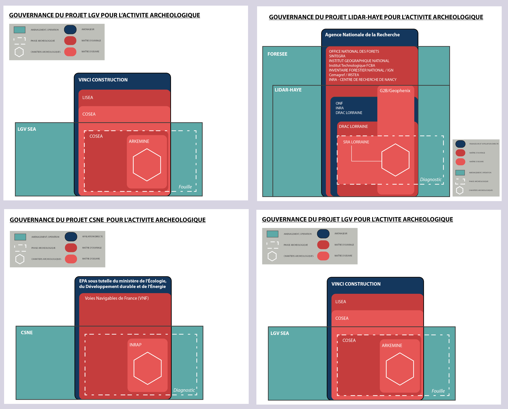

Newsletter Portfolio
07/04/2025
Découvrez mes derniers projets et réalisations dans cette newsletter hebdomadaire.
Récits visuels, horizons numériques :
Chaque newsletter, un voyage entre données, créativité et découvertes

Architecture Modulaire à Base de Contenu

approche-analyse-donnees
data-storytelling-culturel

faq-desinfection

ecriture-datastorytelling

parcours-data-communication
Architecture Modulaire à Base de Contenu
Architecture Modulaire à Base de Contenu
L'Architecture Modulaire à Base de Contenu (ou "Content-Driven Modular Architecture") représente une approche moderne et flexible pour concevoir des sites web et des applications. Cette méthodologie place le contenu au centre du processus de développement, en le séparant strictement de la présentation.
Mots-clés: développement, architecture, contentdriven, méthodologie, applications
Principes fondamentaux
Cette architecture repose sur plusieurs principes clés qui la rendent particulièrement efficace pour les sites riches en contenu comme les portfolios et les blogs :
Mots-clés: architecture, portfolios, principes, plusieurs
Le contenu est stocké dans des fichiers indépendants (souvent au format Markdown) avec des métadonnées standardisées (frontmatter), complètement séparés du code HTML, CSS et JavaScript qui définit leur présentation. Cette séparation permet à chaque aspect d'évoluer indépendamment.
Mots-clés: standardisées, indépendance, présentation
Les sections et composants peuvent être facilement réutilisés, réorganisés ou recombinés pour créer de nouvelles pages ou expériences. Cette flexibilité permet d'assembler rapidement différentes vues à partir des mêmes éléments de base.
Mots-clés: expériences, réorganisation, flexibilité
Modifier un contenu n'exige pas de toucher au code HTML principal. Les rédacteurs de contenu peuvent se concentrer uniquement sur les fichiers Markdown pertinents, sans risquer d'altérer la structure ou le fonctionnement du site.
Mots-clés: fonctionnement, pertinents, concentrer, uniquement, rédacteurs
Ajouter une nouvelle section est aussi simple que de créer un nouveau fichier Markdown. Cette approche réduit considérablement la friction pour enrichir le site avec de nouveaux contenus.
Mots-clés: contenus
Implémentation pratique
Pour les composants simples, le Markdown pur suffit généralement. Cependant, pour les composants plus complexes comme les grilles de compétences, les cartes de services, ou les processus multi-étapes, l'HTML embarqué dans Markdown offre le meilleur compromis :
Cette approche hybride permet de préserver le rendu visuel des composants complexes tout en profitant pleinement de la modularité du système.
Mots-clés: multiétapes, compétences, composants, markdown, modularité, composants, complexes
Avantages à long terme
Au-delà des bénéfices immédiats, cette architecture offre des avantages substantiels sur le long terme :
- Transitions technologiques facilitées - Le contenu peut être conservé même si le framework ou la technologie de présentation change
- Versionning efficace - Les modifications de contenu sont clairement visibles dans les commits Git
- Possibilités de migration accrues - Le contenu peut être facilement exporté vers d'autres systèmes
- Optimisation du workflow - Les designers et développeurs peuvent travailler sur l'interface pendant que les rédacteurs créent le contenu
Cette architecture représente une évolution naturelle des systèmes de gestion de contenu traditionnels, offrant davantage de flexibilité tout en conservant une structure claire et organisée.
Mots-clés: architecture, flexibilité
1. Séparation du contenu et de la présentation
Le contenu est stocké dans des fichiers indépendants (souvent au format Markdown) avec des métadonnées standardisées (frontmatter), complètement séparés du code HTML, CSS et JavaScript qui définit leur présentation. Cette séparation permet à chaque aspect d'évoluer indépendamment.
Mots-clés: indépendance, standardisés, présentation
2. Composabilité
Les sections et composants peuvent être facilement réutilisés, réorganisés ou recombinés pour créer de nouvelles pages ou expériences. Cette flexibilité permet d'assembler rapidement différentes vues à partir des mêmes éléments de base.
Mots-clés: flexibilité
3. Maintenabilité
Modifier un contenu n'exige pas de toucher au code HTML principal. Les rédacteurs de contenu peuvent se concentrer uniquement sur les fichiers Markdown pertinents, sans risquer d'altérer la structure ou le fonctionnement du site.
Mots-clés: pertinents, rédacteurs
4. Évolutivité
Ajouter une nouvelle section est aussi simple que de créer un nouveau fichier Markdown. Cette approche réduit considérablement la friction pour enrichir le site avec de nouveaux contenus.
Mots-clés: enrichir, contenus
Retour en hautapproche-analyse-donnees
Une Approche de l'Analyse de Données
Transformation des Données Brutes en Récits Intelligibles
Image Représentative

Philosophie Fondamentale
Transformer les données brutes en récits stratégiques, révélant les insights cachés derrière les chiffres.
Méthodologie Intégrée
1. Collecte & Préparation
Étapes Cruciales
- Nettoyage méticuleux des données
- Structuration des jeux de données
- Préparation pour l'analyse approfondie
Techniques
- Gestion des valeurs manquantes
- Normalisation
- Prétraitement avancé
2. Analyse Statistique
Approche Comprehensive
- Méthodes statistiques avancées
- Extraction de tendances significatives
- Analyse multidimensionnelle
Outils et Technologies
- Python (Pandas, NumPy)
- R (Tidyverse)
- Techniques de machine learning
- Analyses prédictives
3. Visualisation
Art de la Représentation
- Création de représentations visuelles éloquentes
- Transformation des données complexes
- Design d'information intuitif
Compétences
- Datavisualisation
- Design UX
- Narration visuelle
- Communication graphique
4. Narration Stratégique
Contextualisation des Insights
- Transformation des données en récits
- Mise en perspective stratégique
- Création de sens
Dimensions
- Contexte organisationnel
- Dynamiques culturelles
- Implications stratégiques
Processus d'Analyse Approfondie
Lecture des Contextes
- Écouter les récits des données
- Comprendre les nuances
- Identifier les implications cachées
Tissage des Narratifs
- Au-delà des chiffres
- Connexion avec les expériences humaines
- Exploration des dynamiques organisationnelles
Interprétation Contextuelle
- Situation des données dans leur écosystème
- Perspective professionnelle
- Dimension culturelle
- Contexte historique
Compétences Clés
- Analyse statistique avancée
- Programmation
- Visualisation de données
- Communication stratégique
- Pensée critique
Impact et Résultats
- Insights stratégiques
- Aide à la décision
- Compréhension approfondie
- Transformation organisationnelle
Citation Inspirante
"Les données sont des miroirs qui reflètent les histoires invisibles de nos organisations et sociétés."
Conclusion
Une approche qui fait plus que analyser : elle raconte, révèle et inspire.
Retour en hautdata-storytelling-culturel
Data Storytelling : Exploration Narrative et Culturelle
Transformation des Données en Récits Vivants
Essence de l'Approche
Le data storytelling dépasse la simple présentation de chiffres pour devenir un art de révélation et de compréhension.
Dimensions de l'Exploration
1. Au-delà des Statistiques
- Révéler les dynamiques cachées
- Donner vie aux données
- Transformer l'abstrait en concret
2. Analyse Culturelle Approfondie
Perspectives Multidimensionnelles
- Décoder les systèmes de valeurs
- Comprendre les interactions humaines
- Révéler les dynamiques organisationnelles
3. Contextualisation Narrative
- Ancrer les données dans des récits humains
- Explorer les sous-textes culturels
- Comprendre les évolutions sociétales
Méthodologie
Approche Interdisciplinaire
- Croisement des disciplines
- Dialogue entre quantitatif et qualitatif
- Intégration des perspectives multiples
Techniques d'Analyse
- Analyse statistique avancée
- Ethnographie des données
- Interprétation contextuelle
- Narration scientifique
Compétences Mobilisées
Analytiques
- Traitement de données complexes
- Identification de tendances
- Analyse systémique
- Rigueur scientifique
Narratives
- Storytelling
- Écriture créative
- Communication stratégique
- Vulgarisation
Culturelles
- Sensibilité interculturelle
- Compréhension des dynamiques sociales
- Exploration des systèmes de signification
- Empathie analytique
Principes Fondamentaux
1. Clarté
- Rendre l'information accessible
- Simplifier sans appauvrir
- Traduire la complexité
2. Engagement
- Créer une connexion émotionnelle
- Susciter la curiosité
- Impliquer le lecteur
3. Impact
- Faciliter la compréhension
- Éclairer les prises de décision
- Transformer la perception
Philosophie
"Chaque donnée est un fragment d'histoire, chaque récit est un assemblage de données."
Applications Concrètes
- Rapports d'entreprise
- Études sociologiques
- Projets de recherche
- Communications stratégiques
- Médiations culturelles
Résultats Attendus
- Compréhension approfondie
- Insights novateurs
- Connexion humaine
- Perspective enrichie
faq-desinfection
FAQ Interactive Intelligente sur la Désinfection des Dispositifs Médicaux
Présentation du Projet
Une base de connaissances intelligente et interrogeable dans le domaine spécifique de la désinfection des dispositifs médicaux.
Caractéristiques Principales
- Référence instantanée sans connexion Internet
- Base de connaissances contrôlée et validée
- Facilité d'extension et de maintenance
Technologies Utilisées
- UX Design
- NLP (Traitement du Langage Naturel)
- E-learning
Capture d'Écran

Lien du Projet
Contexte
Ce projet vise à simplifier l'accès à l'information technique sur la désinfection des dispositifs médicaux, en proposant une solution interactive et facile à utiliser.
Retour en hautecriture-datastorytelling
Écriture et Data Storytelling
Analyse Culturelle et Narration de Données
Vue d'Ensemble
L'écriture est un outil de transformation des données complexes en récits captivants, révélant les insights cachés derrière les chiffres et les tendances.
Image de Référence

Approche Méthodologique
- Transformation de données complexes en récits accessibles
- Révélation des dynamiques culturelles sous-jacentes
- Contextualisation approfondie des données
Principes Fondamentaux
- Clarté : Rendre l'information complexe immédiatement compréhensible
- Engagement : Créer une connexion émotionnelle avec les données
- Impact : Faciliter la prise de décision et la compréhension stratégique
Dimensions Clés
- Analyse rigoureuse statistique
- Contextualisation narrative
- Visualisation éloquente
- Communication stratégique
Citation Inspirante
« Les données sont des récits en attente d'être déchiffrés, des fragments d'une histoire plus large qui ne demandent qu'à être racontée. »
Compétences Principales
- Rédaction de contenus analytiques
- Data Storytelling
- Analyse de données
- Vulgarisation technique
- Communication visuelle
Approche de l'Analyse Culturelle
L'analyse culturelle dans le data storytelling va au-delà de l'interprétation statistique traditionnelle. Elle cherche à comprendre comment les données reflètent : - Les interactions humaines - Les sous-cultures professionnelles - Les transformations sociétales
Méthodologie Intégrée
- Décorticage statistique précis des jeux de données
- Ancrage des données dans un récit humain
- Traduction des insights en représentations visuelles
- Adaptation du récit aux différents publics
Domaines d'Expertise
- Articles de fond
- Contenus web
- Optimisation SEO
- Narration de marque
- Récits immersifs
- Data Visualization
parcours-data-communication
Parcours Data & Communication Digitale
Image Représentative

Évolution Professionnelle
Un parcours caractérisé par une convergence constante entre compétences analytiques et créatives.
Dimensions Professionnelles
Formation et Expertise
- Systèmes d'Information
- Gestion de Données
- Communication Digitale
Compétences Clés
Data Visualization
Transformation des Données
- Conversion de données brutes en visualisations éloquentes
- Création de représentations intuitives
- Narration visuelle complexe
Gestion de Systèmes d'Information
Optimisation et Organisation
- Structuration des flux de données
- Analyse des systèmes complexes
- Amélioration des processus informationnels
Vulgarisation Technique
Communication Claire
- Transformation de concepts complexes
- Rendre l'technique accessible
- Médiation technologique
Intelligence Collective
Facilitation de Projets
- Approche collaborative
- Insight-Driven
- Coordination interdisciplinaire
Approche Professionnelle
Convergence Créative et Analytique
- Combinaison de rigueur technique
- Créativité narrative
- Perspective holistique
Outils et Méthodes
- Analyse de données avancée
- Visualisation interactive
- Communication stratégique
- Design thinking
Philosophie Professionnelle
"La communication digitale efficace est l'art de transformer la complexité en clarté."
Compétences Transversales
- Analyse stratégique
- Communication multicanale
- Design de l'information
- Gestion de projets innovants
Lien Professionnel
Impact et Vision
- Démystifier les technologies
- Rendre l'information accessible
- Créer des ponts entre technique et humain